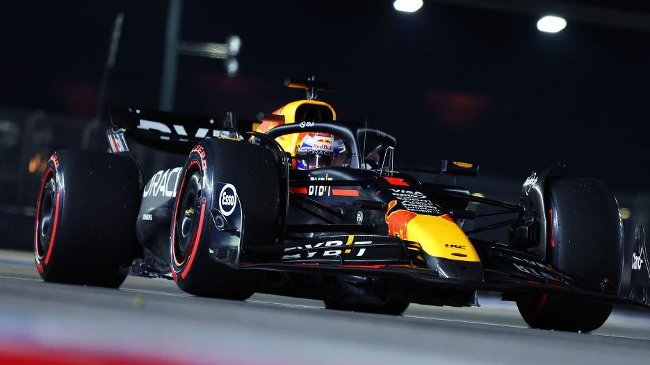

Red Bull es mucho más que una bebida energética. Fundada en 1987 por Dietrich Mateschitz y Chaleo Yoovidhya, Red Bull se ha convertido en una marca global reconocida por su espíritu innovador y su presencia en deportes extremos, música, entretenimiento y, por supuesto, en la Fórmula 1.
Automovilismo (Red Bull Racing)
Red Bull Racing ha revolucionado la Fórmula 1 con su enfoque innovador y su constante búsqueda de la perfección...
- Con múltiples campeonatos mundiales bajo su nombre...
- Su sede se encuentra en Milton Keynes, Reino Unido...
- En 2023, Red Bull Racing dominó la temporada con una impresionante racha de victorias...
- La filosofía de trabajo y el enfoque en la tecnología han sido claves en su éxito...
Deportes Extremos y Eventos (Red Bull)
Además de su equipo de Fórmula 1, Red Bull ha patrocinado y organizado algunos de los eventos más emocionantes del mundo en deportes extremos...
Red Bull ha estado detrás de hazañas impresionantes, como el salto estratosférico de Felix Baumgartner...
- Eventos como Red Bull Crashed Ice, Flugtag, y Red Bull Cliff Diving...
- Patrocinio de atletas en disciplinas como skateboarding, BMX y motocross...
- El apoyo a nuevos talentos en la música y el arte, llevando la marca más allá de los deportes...
Conclusión
Red Bull ha demostrado ser mucho más que una bebida energética. Con su enfoque en la innovación, la pasión por el rendimiento y su compromiso con los deportes extremos, Red Bull sigue marcando la diferencia en todo el mundo...